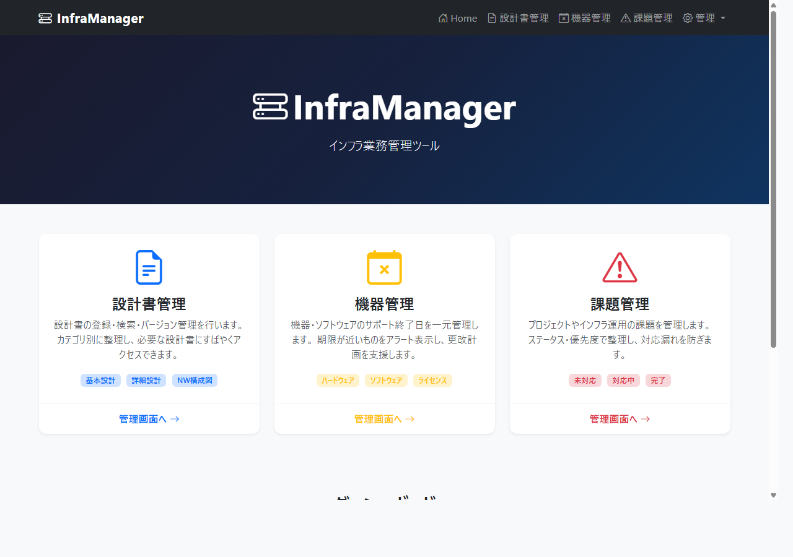
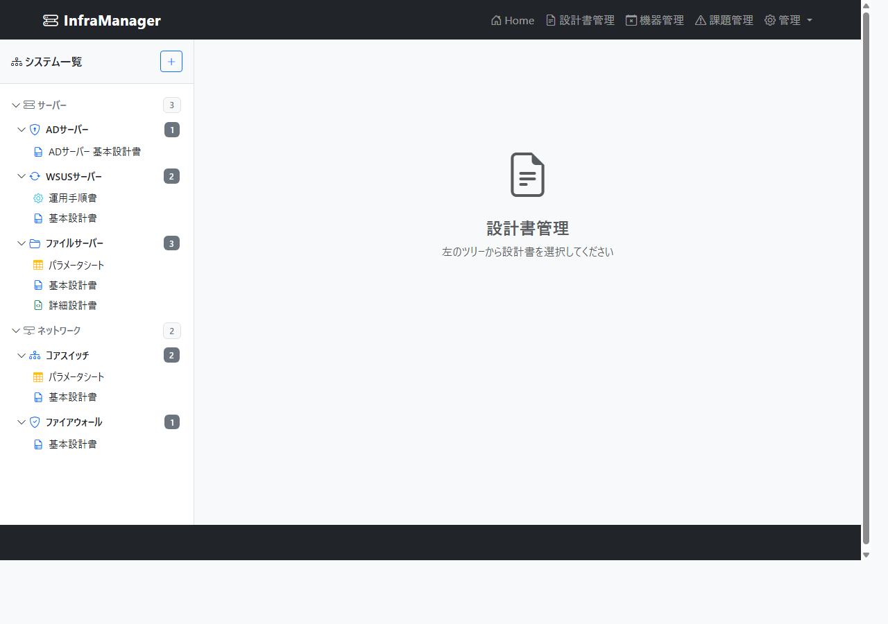
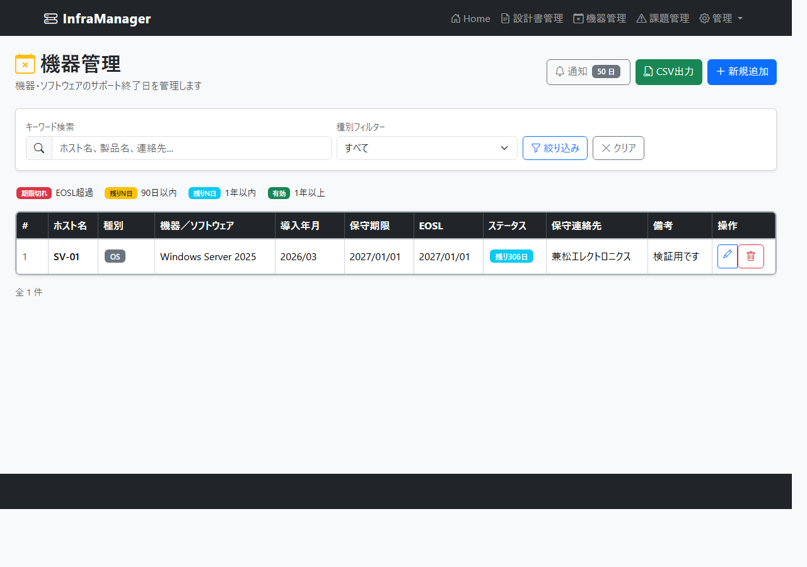
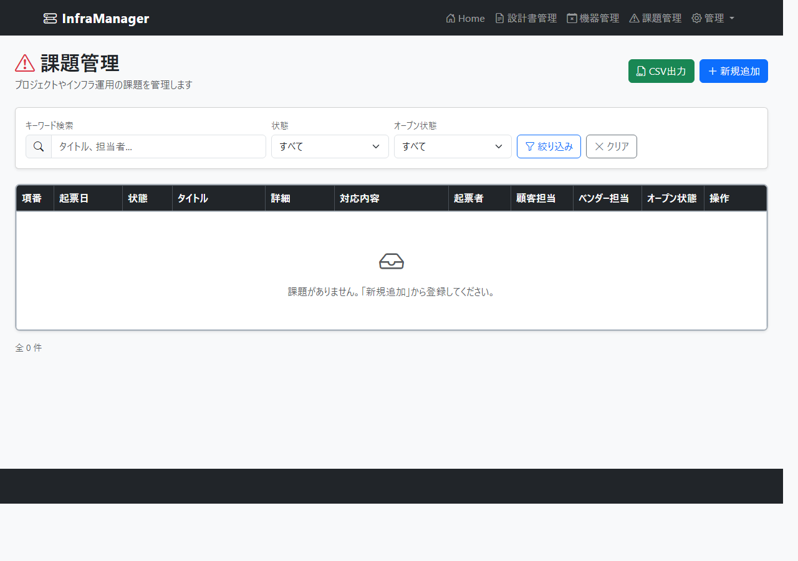
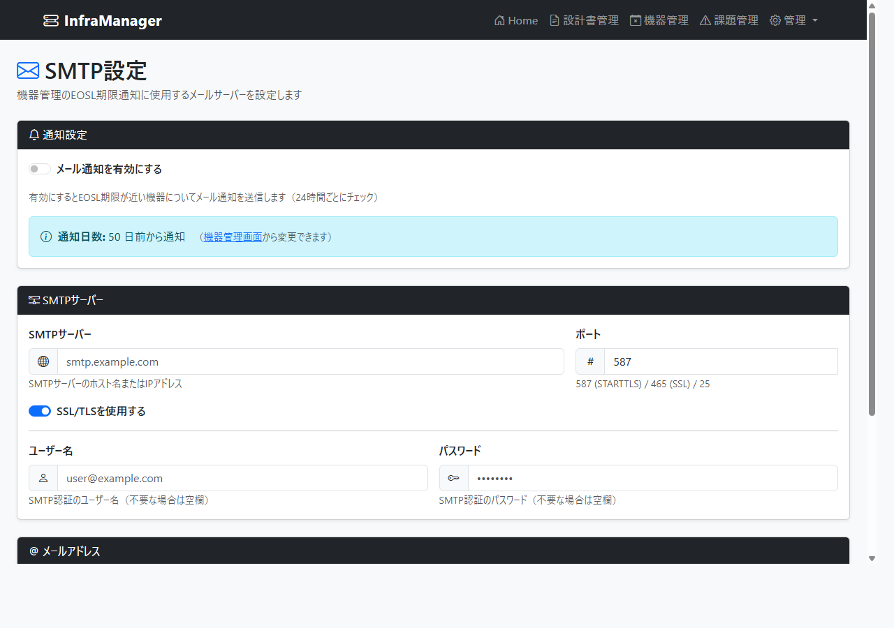

インフラ業務管理ツール - システム紹介資料
InfraManager は、インフラエンジニアの日常業務を支援するWebアプリケーションです。 設計書管理・機器の EOSL 管理・課題管理を一元管理するほか、 Cookie 認証によるアクセス制御や添付ファイル管理、バックアップ/リストア機能を備えています。
Cookie 認証 + PasswordHasher によるログイン。admin / user の 2 ロール管理。
リッチテキストエディタで設計書を作成・編集。テンプレートから効率的にドキュメント生成。
設計書に PDF / Office / CSV を最大 50MB まで添付。SHA-256 ハッシュで整合性を保証。
機器・ソフトウェアのサポート終了日を一覧管理。期限が近づくとメール自動通知。
プロジェクト・運用課題のステータス管理。担当者・顧客情報を一元管理。
全データを ZIP ファイルにエクスポート。旧形式 JSON バックアップの後方互換も保持。
バックグラウンドで 24 時間ごとに期限チェック。SMTP メールで自動通知。
全操作（設計書・機器・ユーザー・添付・設定変更）を監査ログとして自動記録。
SMTP / プロキシ設定、パッケージ更新確認、システム初期化。admin 専用。
全ページがログイン認証で保護されています。未ログイン時はログイン画面へリダイレクトされます。 パスワードはハッシュ化して保存しており、平文では保存しません。
| ロール | アクセス範囲 |
|---|---|
| 管理者 (admin) | 全機能 + ユーザー管理・管理画面（設定・バックアップ・初期化） |
| 一般 (user) | 設計書・機器管理・課題管理・添付ファイル・変更履歴 |
ダッシュボード形式のトップページ。設計書管理・機器管理・課題管理の 3 つのメニューカードと、 各テーブルの登録件数サマリーを一画面で確認できます。

左ペインのフォルダツリーから設計書を選択すると、右ペインにコンテンツが表示されます。 リッチテキストエディタ（contenteditable）で直接編集でき、テンプレートからの作成にも対応しています。 また、既存の設計書ファイルを添付として紐付けることもできます。
Windows / Linux / フリースタイルの組み込みテンプレート。ユーザー定義テンプレートも保存可能。
太字/斜体/見出し/リスト/テーブル/画像挿入。CSS 自動番号付け対応。
設計書ごとに PDF / Office / CSV を添付。一覧表示・ダウンロード・削除が可能。

機器・ソフトウェアのサポート終了日（EOSL）を一覧で管理します。 EOSL ステータスは色分けで直感的に把握でき、キーワード検索・種別フィルタリングも可能です。 CSV 出力ボタンでデータをエクスポートできます。
| ステータス | 条件 | 表示 |
|---|---|---|
| 期限切れ | EOSL 日 < 本日 | 赤背景バッジ |
| 90 日以内 | EOSL 日 ≦ 本日 + 90 日 | 黄背景バッジ |
| 1 年以内 | EOSL 日 ≦ 本日 + 365 日 | 水色バッジ |
| 有効 | EOSL 日 > 本日 + 365 日 | 緑バッジ |

プロジェクトやインフラ運用の課題を管理します。 ステータス（未着手/着手/待ち）とオープン状態（オープン/クローズ）の 2 軸で管理。 CSV 出力にも対応しています。

管理画面（admin 専用）の「バックアップ」メニューから、全データのエクスポート・インポートが行えます。 エクスポートは ZIP 形式（DB データ + 添付ファイル一式）でダウンロードされます。 インポートは ZIP または旧形式 JSON に対応しており、後方互換を保持しています。
同じく管理画面の「初期化」メニューでは、業務データ・ユーザー・設定値などを選択的に削除できます。 誤操作防止のため、確認テキスト入力と管理者パスワードによる二重確認が必要です。
EoslNotificationService は ASP.NET Core の BackgroundService として実装されたバックグラウンドサービスです。
アプリケーション起動後、24 時間ごとに EOSL/保守期限をチェックし、閾値以内の機器があればメールで通知します。
| 設定場所 | 設定内容 | 操作 |
|---|---|---|
| 機器管理画面 → 通知ボタン | 通知日数 (NotifyDays) | モーダルダイアログで変更 |
| 管理 → 設定 | SMTP サーバー情報・有効/無効 | フォームから設定 |
AppSetting テーブルに保存されます。AppSettingService は
次回チェックサイクル時（最大 24 時間後）に新しい値を参照します。
画面上の表示は TempData により即座に反映されます。
管理メニューは admin ロールのユーザーのみアクセスできます。
SMTP サーバーとプロキシを設定します。設定値は AppSetting テーブル（DB）に保存されます。
設定変更は監査ログに変更差分として記録されます。

前章「6. バックアップ / リストア」を参照してください。
NuGet パッケージ・.NET SDK・CDN ライブラリ（Bootstrap / Bootstrap Icons）の
現在バージョンと最新バージョンを一覧表示します。
プロキシが有効な場合は環境変数 HTTP_PROXY / HTTPS_PROXY に反映して確認します。
| 項目 | 内容 |
|---|---|
| パスワード保護 | ASP.NET Core Identity の PasswordHasher でハッシュ化して保存。平文では保持しない。 |
| CSRF 対策 | 全フォーム・Ajax リクエストに AntiForgeryToken を実装。 |
| XSS 対策 | Razor の自動 HTML エンコードにより、出力時に特殊文字をエスケープ。 |
| アクセス制御 | admin / user の 2 ロールで画面・操作を制限。管理画面・ユーザー管理は admin 専用。 |
| 監査ログ | 設定変更・ユーザー操作・データ変更をすべて記録。読み取り専用で改ざん不可。 |
| 危険操作の二重確認 | 初期化実行時に確認テキスト入力＋管理者パスワード再入力が必要。 |
| ファイル整合性 | 添付ファイルを SHA-256 ハッシュで検証。 |
| コードレビュー | GPT-5.4 による複数回のセキュリティレビューを実施済み。 |